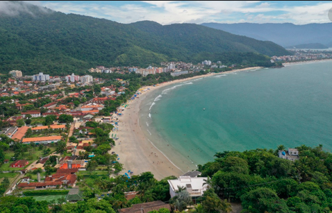
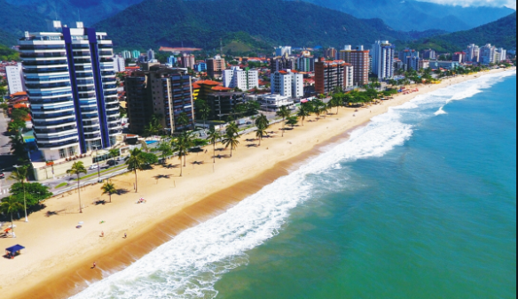
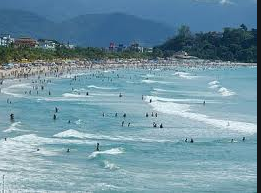
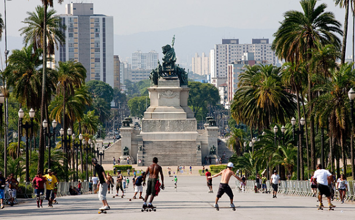

SOCORRO - SP( Localizado próximo a Campinas, este e um perfeito lugar para se
curtir do relaxameto até a aventura extrema ).
VISITAR A GRUTA DO ANJO
Antiga mina de extração de quartzo desativada em 1995, a gruta sofreu infiltrações que criaram uma
grande
piscina natural que chega a ter 4 metros de profundidade em alguns trechos e agora é repleta de
peixinhos.
Não é possível mergulhar, mas os visitantes podem andar de pedalinho e admirar o visual encantador
com a
água translúcida que atravessa a formação rochosa. A gruta, inclusive,
já serviu de locação para filmagens da novela Império, de 2014, da Rede Globo.
VER O PÔR DO SOL NO MIRANTE DA PEDRA DA BELA VISTA
Ponto turístico mais alto da cidade, a Pedra da Bela Vista tem um visual maravilhoso durante
o pôr do sol. O céu fica laranja enquanto músicos tocam ao vivo e o clima tranquilo impera.
É possível relaxar beliscando petiscos no restaurante ao lado que oferece pizza na pedra,
linguiças na chapa e o famoso pan de palo que você assa na hora. Para os mais aventureiros,
o local também conta com o maior rapel da cidade, de 98 metros de altura.
Dica: programe-se para estar a caminho pelo menos uma hora antes do pôr do sol para conseguir
chegar a tempo, pois a estrada é de terra e bem esburacada.
Pequena cidade do interior de São Paulo na Serra da Mantiqueira,
Pedra Bela é nacionalmente conhecida pelos praticantes de esportes de aventura
por abrigar a maior tirolesa das Américas. O percurso que vai do alto da Pedra do Santuário até o
Portal
da
Cidade,
oferece uma paisagem de tirar o fôlego. São 1.900m de extensão com velocidade de até 107 km por
hora,
a uma altura de até 250 metros do chão. Mega adrenalina!
SÃO ROQUE ( Para os amantes do romantismo, um lugar perfeito para casais ).
São Roque é conhecida como a Terra do Vinho pelas dezenas de vinícolas instaladas na região.
Não à toa, um dos principais atrativos da cidade é a Rota do Vinho, localizada em meio à
natureza
e composta por três vias com mais de 30 estabelecimentos, entre restaurantes, lojas, fazendas,
vinícolas, empórios
e centros de entretenimento.
Por ser muito próximo a São Paulo –a apenas 65 km–, é possível fazer um bate e volta
e aproveitar muito a região em apenas um dia.
HOLAMBRA- SP (Um excelente lugar para curtir com a esposa, namorada e pais.).
Holambra é um município brasileiro do estado de São Paulo e microrregião de Campinas,
fundada em 14 de julho de 1948. Seu nome, junção de Holanda, América e Brasil,
se dá em virtude da colônia neerlandesa que se firmou na antiga fazenda Ribeirão.
Conhecida por ser a maior produtora de plantas ornamentais do Brasil e também sede da Expoflora
(maior
exposição
de flores e plantas da América Latina que acontece entre os meses de agosto e setembro), a cidade
oferece
aos
seus visitantes lindos jardins, praças super bem cuidadas para a diversão da criançada, a deliciosa
culinária
alemã e sobremesas típicas de tirar o fôlego! Não deixe de passar em uma das docerias para provar os
quitutes
locais!
Suas ruas principais conservam a arquitetura das casinhas no estilo holandês,
então aproveite a caminhada para, além de comprar souvenires de porcelana no centrinho comercial,
garantir lindas fotos como recordação.
Impossível não pensar em Brotas sem lembrar do turismo de aventura.
Mas e pra quem quiser uma viagem mais relax? O Parque Recanto das Cachoeiras é uma das melhores
opções
de o que fazer em Brotas. O parque possui lindas cachoeiras com fácil acesso,
perfeito para quem quer curtir Brotas sem necessariamente fazer algum esporte radical.
O Recanto das Cachoeiras atrai turistas que procuram um fim de semana tranquilo, romântico ou para
curtir
com a família.
Ainda assim, dá pra ter uma dose extra de adrenalina.
Entre as principais atividades radicais e passeios em Brotas , os destaques são:
rafting, canionismo, escalada indoor, rapel, arvorismo, tirolesa, cicloturismo, cavalgada,
quadriciclo,
passeios off road, queda livre, kayak duplo e voo de balão. A parte boa é que essas atividades podem
ser aproveitadas com tranquilidade, pois a cidade é o local com o maior número de atrações com o
selo do
Inmetro no quesito gestão de segurança.
A cidade é cortada pelo rio Jacaré-Pepira, um dos mais limpos do estado de São Paulo, e as paisagens
tornam os passeios em Brotas ainda mais encantadores. Outro ponto positivo é a localização
privilegiada
- a cidade se encontra na região central de São Paulo, localizada a 242 km da capital paulista, e
tem
fácil
acesso a rodovias duplicadas, como Bandeirantes, Anhanguera e Washington Luís.
😎 I will show the beauty SÃO LUIS DO PIRAITINGA -
SP
SÃO LUIS DO Paraitinga - SP
Além de bater pernas pelas atrações do Centro Histórico, São Luiz do Paraitinga tem atrativos
naturais
em que o carro é indispensável. Com acesso pela Rod. Oswaldo Cruz, no sentido de Ubatuba,
o distrito de Catuçaba (a 20 km) abriga a Trilha das Sete Cachoeiras. Na mesma direção o
Núcleo Santa Virgínia do Parque Estadual da Serra do Mar (a 40 km) tem trilhas e rafting
O QUE FAZER
Carnaval
São Luiz do Paraitinga se acostumou a ver suas ruas cheias de gente pulando atrás dos blocos durante
o Carnaval. As tradicionais marchinhas, selecionadas entre composições locais num festival que
antecede
o evento, são perfeitas para quem quer fugir do circuito do axé. A folia ocorre no Centro Histórico
e em outros pontos da cidade, como a recém-inaugurada praça de eventos. Programação: 12/3671-1672
(Secretaria de Turismo).
Estância climática
Santo Antônio do Pinhal é um dos 12 municípios paulistas considerados estâncias
climáticas pelo Estado de São Paulo, por cumprirem determinados pré-requisitos definidos
por Lei Estadual. Tal status garante a esses municípios uma verba maior por parte do Estado
para a promoção do turismo regional. Também, o município adquire o direito de agregar
junto a seu nome o título de Estância Climática, termo pelo qual passa a ser designado tanto
pelo expediente municipal oficial quanto pelas referências estaduais.
Santo Antônio do Pinhal é uma cidade que apesar de pequena, oferece muito o que fazer para aqueles
que
buscam desfrutar o clima de montanha da Serra da Mantiqueira.
A cidade também possui uma variedade de restaurantes e opções de compras.
Outra vantagem é que passa longe do super faturamento da sua famosa e agitada vizinha Campos do
Jordão.
Se está procurando o que fazer em Santo Antônio do Pinhal seja pra passar
momentos românticos a dois nas montanhas ou aproveitar a tranquilidade com a família ou amigos,
acompanhe o guia que preparamos pra você curtir a cidade.
>CAMPOS DO JORDÃO - SP
O interior mais romântico de São Paulo
Campos do Jordão é um município na Serra da Mantiqueira, no Brasil, e faz parte do estado de São
Paulo.
Engloba uma cidade com o mesmo nome, onde é comum a arquitetura de estilo suíço, e o Parque Estadual
de Campos do Jordão, a nordeste. Abrangendo um terço do município, as florestas de pinheiros do
parque
e as montanhas albergam várias aves e animais em risco de extinção, incluindo pumas e jaguatiricas.
Considerada uma das cidades mais românticas do Brasil, Campos do Jordão é destino de muitos casais o
todo
o ano.
Durante todo o mês de junho com a aproximação do Dia dos Namorados, este número tende a crescer
bastante.
A chegada do frio e o charme característico de Campos criam uma atmosfera encantadora, que fascinam
os
apaixonados de todo o Brasil.
É neste neste clima de romance e magia, que as belas paisagens da cidade se tornam plano de fundo
para
histórias e lembranças que marcam a vida de muita gente.
Pessoa de todas as partes do País escolhem a cidade para ser palco de pedidos de casamento,
realização de cerimônias, Luas de Mel e comemorações de aniversários de matrimônio.
Assim a cidade se torna parte de muitas histórias, onde o amor entre casais é o protagonista.
Se você também acha que Campos do Jordão é uma cidade perfeita para curtir o Dia dos Namorados
e curtir momentos especiais a dois, então confira 7 Programas Românticos para fazer em Campos do
Jordão
no Dia dos Namorados:
Joanópolis é um município brasileiro do estado de São Paulo, na microrregião de Bragança Paulista,
nos contrafortes da Serra da Mantiqueira, divisa com Minas Gerais. Localiza-se a uma latitude
22º55'49" sul e a uma longitude 46º16'32" oeste, estando a uma altitude de 906 metros,
com uma área de 374,293 km².
Joanópolis é uma típica cidade do interior, que faz da sua Praça da Igreja Matriz (praça central)
palco de diversos eventos culturais. Conhecida pela grandeza da sua festa junina, o município
mantém viva as tradições da cultura caipira do interior de São Paulo. Com uma área urbana charmosa,
onde ainda podemos encontrar casarões no estilo colonial,que foram realçados por um projeto
urbanístico
moderno para época, com ruas largas e quarteirões geométricos.
A maior atração é a Caverna do Diabo, esculpida há milhares de anos, sendo a mais bela do estado
A Estância Turística de Eldorado é o quarto maior município do Estado de São Paulo, com uma área de
171.200 hectares, sendo aproximadamente 30% desse território ocupado por Unidades de Conservação
como
o Parque Estadual do Jacupiranga e o Parque Estadual Intervale que são áreas destinadas à
preservação
da Floresta Atlântica. A busca pelo ouro fez nascer Eldorado, cidade no interior de São Paulo.
Os descendentes de escravos ainda mantêm comunidades quilombolas e os bairros rurais abrangem grande
parte da população, assim como as fazendas do século passado. A natureza encanta os olhos dos
turistas
que encontram a Caverna do Diabo e a Cachoeira de Meu Deus, uma beleza esculpida há milhares de anos
pelo meio ambiente. O relevo do município é como em quase todo o Vale do Ribeira, montanhoso com
vales profundos, quase sempre tomados por pequenos córregos e ribeirões de águas cristalinas e
quedas d’ água de grande beleza, próprios para Ecoturismo e Turismo de Aventura.
Em Eldorado não é permitido fazer nenhum passeio sem acompanhamento de guia, o que possibilita
aprender muito sobre a natureza, o local e conhecer tudo que a região tem de melhor.
História
Por volta do ano 1000, a região foi invadida por povos tupis procedentes da Amazônia, que expulsaram
os
antigos habitantes tapuias para o interior do continente. No século XVI, quando os primeiros
europeus
chegaram à região, ela era ocupada pela tribo tupi dos tamoios.[11]
Em 1597, uma expedição portuguesa comandada por Martim Correia de Sá saiu do Rio de Janeiro,
desembarcou em Paraty e passou pela região de Cunha através da Trilha dos Guaianás visando a
combater os tamoios, que estavam aliados aos franceses contra os portugueses. Desde o final do
século XVII, a região já era conhecida como "Boca do Sertão", por ser um ponto onde se subia a serra
em direção às Minas Gerais. Em 1730, viajantes se fixaram na região e fundaram um povoado. No
povoado,
a família portuguesa Falcão ergueu a capela da Sagrada Família. Por este motivo, o povoado passou a
ser
conhecido como "freguesia do Falcão". No início do século XVIII, foi erguida, entre a freguesia do
Falcão e Paraty, a Barreira do Taboão, que era um posto destinado a controlar o fluxo de ouro
procedente de Minas Gerais. O povoado foi elevado a vila em 3 de setembro de 1785 pelo então
governador da Capitania de São Paulo, Francisco da Cunha e Meneses, com o nome de Nossa Senhora
da Conceição de Cunha, em homenagem ao político. No século XIX, as antigas trilhas foram calçadas
e ampliadas visando a transportar a grande riqueza da épocaː o café.[12]
Caverna do diabo - Parque estadual intervales - Parque estadual Caverna do diabo -
Procurando um destino romântico? Então você precisa conhecer Cunha! A Estância Climática faz divisa
com
Paraty, no Rio de Janeiro, e é rodeada pela Serra do Mar e da Bocaina, o que faz com que a cidade
tenha
uma vista de tirar o fôlego. Por ser conhecida como a terra dos ceramistas, possui diversos ateliês
para
você conhecer.
Outras atrações são os campos de lavanda, a Pedra da Macela – de onde pode se avistar parte do
litoral
carioca – trilhas, cachoeiras e o clima das montanhas para descansar. Cunha está a 220 km da
capital.
História
Sua história começou por volta de 1630, quando da adentrada ao Rio Ribeira por exploradores
portugueses
que estavam à procura de veios de ouro. Surgiram as primeiras povoações, denominadas de arraiais de
mineração, às margens do Rio Ribeira de Iguape, com destaque para os povoados de Ivaporunduva e
Jaguary.
Por volta de 1750, ergueu-se um novo povoado a cerca de vinte quilômetros rio abaixo da localidade
de
Jaguary (atual Itapeúna): era o povoado de Xiririca. O nome era referência à palavra em tupi-guarani
para água corrente.[9]
Em 16 de janeiro de 1757, os irmãos Veras, de importante família de colonizadores, doaram duas casas
no
povoado de Xiririca, para que ali se construísse uma capela, e, em 8 de setembro, a capela, já
pronta,
recebeu a imagem de Nossa Senhora da Guia (atual padroeira do município).
Praça Doutor Otávio de Moura Andrade - Monumento das Águas - Thermas Water Park - Carnaval com
espuma e em Aguas de São Pedro.
O maior complexo de lazer e turismo do estado de São Paulo! - Piscina de Ondas - Balde Maluco
- 11 Piscinas - 03 Piscinas com águas quentes e cascatas - Parque Aquático Infantil Temático - 12
Toboáguas -
Free Fall - Rampa de bóias - Quiosques com churrasqueiras* - Restaurantes e lanchonetes* - Mini
Fazenda
Vô Bráulio -
Passeio a cavalo* - Chalés para hospedagem* - Exposição Era Pré Histórica* - Exposição de insetos
gigantes -
Exposição gigantes do fundo do mar E muito mais! *serviços não inclusos no Day Use
História
Águas de São Pedro (pronuncia-se IPA: [ˈaɡwas di sɐ̃w̃ ˈpedɾu] Loudspeaker.svg ouça) é um município
brasileiro no
interior do estado de São Paulo. Pertence à microrregião e Mesorregião de Piracicaba, localiza-se a
noroeste da capital
do estado, distando desta cerca de 187 km.[2] Ocupa uma área de 3,61 km², sendo o menor município
paulista e o segundo
menor município brasileiro em extensão territorial, sendo maior apenas que Santa Cruz de Minas (MG).
Em
2010,
sua população foi contada pelo IBGE em 2 707 habitantes,[5] sendo então o 594º mais populoso de São
Paulo e o último
de sua microrregião.
Praia Enseada - Praia Maranduba - Praia do Cedro - praia Itamambuca - Praia do português - Praia
do
prumirim -
Praia de Puruba - Praia de Ubatumirim - Praia Almada - Praia laço da cavala - Praia do Mocó -
Ponta
da Cabeçuda -
Praia Picinguaba - ponta da Cruz ( Algumas das maravilhosas praias de UBATUBA)

Ubatuba é um município costeiro no estado de São Paulo, no Brasil, rodeado pela floresta tropical do
Parque Nacional
da Serra do Mar. A praia Itamambuca, no nordeste, é conhecida pela forte rebentação das ondas. As
águas
à volta da Ilha
Anchieta são uma área de alimentação para as tartarugas marinhas. Em Ubatuba, o projeto TAMAR
protege as
tartarugas e tem
um centro de visitantes com tanques. Existem mais criaturas marinhas em exibição no Aquário de
Ubatuba.
😎 I will show the beauty CARAGUATATUBA litoral norte de
Santos- SP
CARAGUATATUBA - SP
Praia de Tabatinga -Ilha do Tamanduá - Praia da Mococa - Praia da Cocanha - Praia Martim de Sá -
Praia Brava -
Praia de Massaguaçu -Prainha - Praia do Indaiá -Praia da Freira - ( Algumas das maravilhosas
praias de CARAGUATATUBA)

As 16 praias de Caraguatatuba estão distribuídas numa orla de 40 km, algumas com infraestrutura
composta por grandes
calçadões, avenidas à beira mar e shoppings.
A cidade de Caraguatatuba está localizada a 182 km da capital paulista e é o maior município do
Litoral Norte de São Paulo.
Caraguá (como é chamada) é bem urbanizada e conta com ótima infraestrutura. Tem 13 km de ciclovias a
beira mar, com início
na praia das Flecheiras, passando pelas praias do Aruan, Indaiá, Centro, Camaroeiro e Prainha,
terminando na Martin de Sá.
Há uma boa quantidade de hotéis e pousadas em Caraguatatuba. Possui estrutura com mais de 8.000
leitos, porém cerca de
50% estão em casas de veraneio e apartamentos espalhados nas praias de Caraguatatuba.
Caraguatatuba é um município brasileiro no litoral norte do estado de São Paulo. Pertence à
Mesorregião do Vale do Paraíba
Paulista e Microrregião de Caraguatatuba. Localizando-se a leste da capital do estado, distando
desta cerca de 178 km.
A cidade ocupa uma área de 484,947 km². Em 2019 sua estimativa populacional foi de 121 532
habitantes,[5]
resultando em uma densidade demográfica de 250,6 hab/km², sendo nesse ano o 71.º mais populoso de
São Paulo e o 260.º
do país. O município é formado pela sede e pelo distrito de Porto Novo[
Praia do Iporanga - Praia de São Pedro - Praia Branca - Praia do Guaiúba - Praia do Tombo - Praia
do
Perequê
Praia de Pernambuco - Praia das Astúrias - Praia das Pitangueiras - Praia da Enseada - Praia do
Éden
- Praia da Armação das Baleias -Ilha
Praia do Camburí ou Prainha ( Algumas das maravilhosas
praias de GUARUJA)
São mais de 22 km de faixa-de-areia das mais incríveis praias do litoral paulista. A incrível
brancura,
a excelência balneabilidade durante todo o ano e as vastas opções de praias para todos os gostos,
tornam
Guarujá
um destino elogiado em todo país. Conheça a Pérola do Atlântico!
Guarujá é uma das cidades turisticamente mais queridas dos paulistanos, é a terceira maior ilha do
litoral paulista e reserva uma natureza exuberante e 27 praias. A Praias
Imobiliária e Construtora investe e acredita na cidade desde 1983 quando
ampliou seu horizonte da Praia Grande para a região do Guarujá e em seguida
para Riviera de São Lourenço. Temos opções de imóveis em quase
todas as praias do Guarujá, exceto aquelas ainda virgens. Então aproveite agora
para conhecer todas as praias do Guarujá pela ordem das mais conhecidas para as
mais secretas.
😎 I will show the beauty SÂO SEBASTIÂO litoral norte de Santos
- SP
SÂO SEBASTIÂO- SP
Praia de Boraceia Norte - Praia de Jureia Norte - Praia do Engenho - Praia Barra do Una - Praia
Juqueí - Praia Preta
Praia da Barra do Sahy - Praia da Baleia (São Sebastião) - Praia de Camburi (São Sebastião) -
Praia
de Camburizinho
Praia Boiçucanga - Praia de Maresias - Praia de Paúba - Praia de Santiago (São Sebastião)(
Algumas
das maravilhosas
praias de SÂO SEBASTIÂO)
Além das 36 praias (veja abaixo), a cidade tem alguns lugares para visitar, como a Igreja Matriz de
São
Sebastião,
o Museu de Arte Sacra, o Museu do Mar no Balneário dos Trabalhadores, o Convento da Nossa Senhora do
Amparo e o Convento
Franciscano. O centro da cidade pode ser dividido em duas partes: uma, antiga, o centro histórico,
em
torno da Igreja matriz,
cheia de casas do Brasil Colonial, que hoje abrigam bares, restaurantes, hotéis e repartições
públicas.
A outra parte,
moderna, localiza-se próxima ao mar, num aterro. É um dos principais pontos de encontro dos
moradores da
cidade,
tendo como principal logradouro a Rua da Praia, onde está localizada a pista de skate da cidade, que
tinha sido
considerada a maior do Brasil, com 7.000 m²,[20], além do teatro municipal. Há também muitas
sorveterias, restaurantes,
bares, feiras de artesanato e uma grande praça.
😎 I will show the beauty ILHABELA Litoral norte de Santos-
SP
ILHABELA- SP
Praia do Bonete - Praia de Castelhanos - Praia da Feiticeira - Ilha das Cabras -Praia do Julião
(Prainha) - Praia do Perequê
Praia do Curral - ( Algumas
das maravilhosas
praias de ILHABELA)
História
Ilhabela foi identificada em 1502 por Américo Vespúcio, que lhe deu o nome do santo do dia, o São
Sebastião.
Vespúcio escreveu mais tarde que, se realmente existisse um paraíso na Terra, este certamente
estaria
muito próximo
a esta região, hoje denominada Litoral Norte de São Paulo.
O povoamento dos colonos ilha apenas se iniciou em 1608, cem anos após terem à identificado.
Foi quando os habitantes de Santos foram a ilha a fim de desenvolver atividades agrícolas, e a
principal
atividade
exercida era o plantio da cana e a produção de açúcar, utilizando exclusivamente mão-de-obra
escrava.
Plantavam-se em
menor escala o fumo-da-terra, o anil, o arroz, o feijão e a mandioca, que substituía o trigo.
O arquipélago foi muito usado como refúgio por corsários e piratas.
Praia de Itaguaré - Praia da Boracéia - Praia de Riveira de São Lourenço - Praia de Guaratuba -
Indaiá -
Canal de Bertioga - ( Algumas das maravilhosas praias de BERTIOGA Santos - SP)
Embora Bertioga possa não ser tão famosa para muita gente quanto algumas de suas vizinhas – como
Santos,
Guarujá,
Praia Grande, São Sebastião, Ilhabela e Ubatuba – não é por isso que a cidade deixar de merecer a
visita.
E muito pelo contrário. Com o título de Estância Balneária e repleta de condomínios, ela possui
ótima
estrutura para
atender os visitantes e ainda oferece praias que podem estar entre as melhores do estado.
História - Seu nome tem sua origem no tupi antigo falado na costa brasileira, através do termo tupi
piratyoca,
que significa "casa do peixe branco". Para outros, no entanto, Bertioga tem origem no termo tupi
buriquioca,
que significa "casa do muriqui". A teoria mais aceita é que Bertioga significa "casa do muriqui" em
tupi.
Durante o início da colonização portuguesa, no século XVI, a região era considerada de transição
entre o
território
tupinambá, que ia desde o cabo de São Tomé, no atual estado do Rio de Janeiro, até o rio
Juqueriquerê,
em Caraguatatuba
e o território dos tupiniquins, que ia desde as cercanias de São Vicente, passando por Itanhaém e
Peruíbe,
até Cananeia.
Praia do Boqueirão - Praia do Embare - Praia da Aparecida - Praia do Gonzaga - Praia do José
Menino-
Praia de Itarare - ( Algumas das maravilhosas praias de SANTOS-SP)
Quando estiver por lá, você poderá curtir o sol na praia ou então sair um pouco e descobrir mais
sobre a cultura brasileira
e até mesmo sobre a vida marinha - possibilidades que fazem da cidade uma das mais ricas do litoral
paulista. Mas, se
você estiver a fim de só fugir do calor do verão nas praias de Santos , as opções não irão te
decepcionar.
Para chegar em Santos, é simples: de carro, você pode ir pela Rodovia dos Imigrantes ou pela Rodovia
Anchieta.
Se preferir pegar um coletivo para não ter que lidar com o estresse do congestionamento dirigindo,
pode ir até o
Terminal Rodoviário do Jabaquara, de onde saem ônibus que fazem o percurso São Paulo-Santos. O tempo
de viagem é de 1
hora quando não há congestionamento.
Esta é uma das praias mais badaladas de Santos, no coração do conhecido calçadão que vai se uma ponta
a outra da orla da
cidade. O mar por ali é calmo ecom uma extensa faixa de areia a praia do Gonzada é um dos um
destinos preferidos dentre as
famílias. No entorno, é possível encontrar muitas opções de entretenimento, que vão de hotéis e
restaurantes a shoppings e bares
para quem quiser dar uma pausa na vida praiana.
😎 I will show the beauty MONGÁGUA litoral sul de Sants -
SP
MONGÁGUA-SP
Praia São Paulo - Praia Agenor de Campos - Praia Flórida Mirim - Praia Grande ( Algumas das
maravilhosas praias de MONGÁGUA-SP)

Hist��ria
Mongaguá é uma palavra indígena que significa “água pegajosa”. Nome dado pelos índios guaranis que viviam às
margens dos rios
Mongaguá e Aguapéu. No século XVI, segundo historiadores, emissários de Martim Afonso de Souza, em suas
viagens pelo litoral paulista,
aravam em Mongaguá para descansar.
Mongaguá é uma das estâncias balneárias da Baixada Santista. Além das praias, possui áreas preservadas, com
trilhas, parques
ecológicos e cachoeiras.
Entre os destaques do município, além dos 13 km de praias, está a Plataforma Marítima de Pesca que é uma das
maiores do mundo.
Tem também a arquibancada do pescador amador no rio Mongaguá; uma área de lazer com cachoeiras; o Poço das
Antas; Skate Parque,
Parques Ecológicos como o Morro dos Macacos; Belvedere Municipal, Turismo Rural, Feiras de Artesanato, entre
outros.
😎 I will show the beauty PERUIBE litoral sul de Santo -
SP
PERUIBE SANTOS - SP ( Praia do Centro - Praia do Costão - Prainha -Praia de Guaraú - Ilha do Guaraú
-Ilha
Praia do Arpoador - Praia do Caramborê - Praia do Parnapuã -Barra do Una).
Quando do descobrimento do Brasil pelos portugueses em 1500, já existia, na região, a Aldeia dos Índios
Peruíbe. No sistema de Capitanias Hereditárias implantado pela Coroa Portuguesa em 1534 para a
colonização do Brasil, o território onde hoje localiza-se Peruíbe pertencia à Capitania de São Vicente,
cujo donatário era Martim Afonso de Sousa.
Peruíbe conta com uma faixa de areia de treze quilômetros de praias interligadas em sua área central,
e cada uma delas recebe o nome do seu respectivo bairro.
A maré desse trecho da orla é baixa e o banhista pode entrar com segurança mar adentro, o que torna o
passeio ideal para todos os perfis de visitantes.
Quase toda margeada por quiosques, essa região tem estrutura diversa para alimentação e diversão de toda
a família.
Assim como as praias localizadas na cidade, em Peruíbe existem outros paraísos a serem descobertos.
Você é aventureiro? Gosta de curtir com a família ou prefere pegar onda? Descubra abaixo qual a praia de
Peruíbe que mais tem a ver com o seu perfil.
😎 I will show the beauty ITANHAÉM litoral sul de Santo -
SP
ITANHAÉM - SP ( Praia do Tombo - Praião (Praia de Itanhaém) - Praia da Saudade - Praia dos Pescadores
- Praia dos Sonhos -Ilha
Praia das Conchas - Praia do Suarão - Praia do Cibratel - Praia do Gaivota - )
A Praia dos Sonhos tem cerca de 800 metros de extensão e seu nome antigamente era Praia do Meio. Com o
advento do
loteamento defronte à praia, foi denominada Praia de Sonho e logo após Praia dos Sonhos.
A empresa loteadora não poupou nem mesmo a História, citando em seu caderno promocional que suas areias
haviam
sido pisadas por Martim Afonso de Sousa, e uma infinidade de fatos fisctícios ligados ao Padre José de
Anchieta,
dando a ele o «Morrete do Púlpito de Anchieta». Fatos históricos (ou não) à parte, trata-se de uma bela
praia.
Uma das primeiras igrejas do Brasil foi construída, originalmente, em território de Itanhaém, restando
hoje
apenas as chamadas ruínas de "Abarebebê", atualmente no território do emancipado município de
Peruíbe.[14] Em
1563, o famoso navegante alemão Hans Staden naufragou em alto-mar, tendo nadado para a Vila de Itanhaém
e, daí,
partido para o litoral norte.[7] Outra figura importante na história da cidade foi o padre José de
Anchieta,
hoje elevado a santo católico, que peregrinou várias vezes pela região durante o Século XVI,
catequizando índios
locais..
😎 I will show the beauty IBIRAPUERA região central -
SP
IBIRAPUERA - SP
O Parque Ibirapuera é um parque urbano localizado na cidade de São Paulo, Brasil. Em 2017, foi o
parque mais
visitado da América Latina, com aproximadamente 14 milhões de visitas,[1] além de ser um dos locais
mais
fotografados do mundo.
O PEQUENO GRANDE PARQUE IBIRAPUERA
Pelo seu tamanho e pelo tamanho da sua população, São Paulo deveria ter ao menos dez vezes mais
áreas
verdes do que tem atualmente. Quem sofre com os efeitos da…
😎 I will show the beauty PARQUE DO CARMO zona leste-
SP
PARQUE DO CARMO - SP
Localizado na área da antiga fazenda do empresário Oscar Americano de Caldas Filho, para a
criação do
parque foram mantidos a sede, em arquitetura colonial, um conjunto de lagos e toda a área
ajardinada.
Seu Bosque das Cerejeiras e os monumentos à imigração japonesa são referências culturais da
cidade.
O parque sedia a tradicional Festa das Cerejeiras para comemorar o florir da árvore-símbolo do
Japão e
marca da comunidade nipônica que vive na região. Todos os anos ocorre a prática do “hanami”,
ritual
que consiste em sentar-se sob as cerejeiras e contemplá-las por longo período.
A rica FLORA reúne eucaliptais (Eucalyptus sp.), remanescentes da Mata Atlântica com mata ciliar,
campos antrópicos,
brejos, áreas ajardinadas, bosques heterogêneos, maciços arbóreos, cafezal (Coffea arabica),
bosque de cerejeiras
(especialmente Prunus x yedoensis) e um viveiro de produção de mudas. Destaques: aldrago
(Pterocarpus rohrii),
angico (Anadenanthera colubrina), araribá-rosa (Centrolobium tomentosum), bambu-chinês (Bambusa
tuldoides),
bambu-imperial (Bambusa vulgaris), canela-ferrugem (Nectandra oppositifolia), copaíba (Copaifera
langsdorffii),
espatódea (Spathodea campanulata), falsa-figueira-benjamim (Ficus microcarpa), falsa-seringueira
(Ficus elastica)
flor-de-abril (Dillenia indica), gameleira-brava (Ficus organensis), ginkgo (Ginkgo biloba),
grevílea-gigante
(Grevillea robusta), ingá-ferradura (Inga sessilis), ipê-amarelo (Handroanthus chrysotrichus),
ipê-branco
(Tabebuia roseoalba), jequitibá-rosa (Cariniana legalis), jerivá (Syagrus romanzoffiana),
liquidâmbar
(Liquidambar styraciflua), magnólia amarela (Magnolia champaca), magnólia-branca (Magnolia
grandiflora), mangueira
(Mangifera indica), paineira (Ceiba speciosa), pau-de-balsa (Ochroma pyramidale), pau-ferro
(Libidibia ferrea var.
leiostachya), pau-jacaré (Piptadenia gonoacantha), pitangueira (Eugenia uniflora), seafórtia
(Archontophoenix cunninghamiana), sibipiruna (Poincianella pluviosa var. peltophoroides),
suinã (Erythrina speciosa), tamboril (Enterolobium contortisiliquum) e tipuana (Tipuana tipu).
Já foram registradas 147 espécies vasculares, das quais estão ameaçadas de extinção:
canela-amarela
(Nectandra barbellata), pau-brasil (Paubrasilia echinata), ipê-felpudo (Zeyheria tuberculosa),
jequitibá-rosa (Cariniana legalis) e pinheiro-do-paraná (Araucaria angustifolia).
Foram registradas 193 espécies de FAUNA, sendo 164 vertebrados e 29 invertebrados, destacando-se 25
espécies de borboletas.
Dentre os vertebrados, 11 espécies de répteis, a exemplo do lagarto florestal, conhecido como
papa-vento.
Há registro de oito mamíferos, como veado-catingueiro, preguiça-de-três-dedos, tatu, ouriço-cacheiro
e caxinguelê.
Dentre as 145 espécies de aves, destacam-se as garças, mergulhões, martins-pescadores, irerês, socós
e ananaís,
que utilizam o lago. As distintas paisagens do parque oferecem oportunidade de avistamento do
imponente
gavião-pega-macaco, rapinante ameaçado de extinção, e de espécies endêmicas de Mata Atlântica,
como a borralhara-assobiadora e o pula-pula-assobiador.
😎 I will show the beauty PARQUE DA ACLIMAÇÃO, região
central - SP
PARQUE DA ACLIMAÇÃO - SP
O Parque da Aclimação é uma área pública de lazer localizada na região central da cidade de São
Paulo, Brasil,
no bairro da Aclimação, que atualmente conta com uma área de 112 mil metros quadrados e foi
inaugurado em 1939.
O local foi sede do primeiro zoológico da cidade, fundado em 1892 nas terras do antigo Sítio do
Tapanhoin, por
Carlos Botelho inspirado no Jardin d’acclimatation, em Paris.[1] O parque foi adquirido pela
Prefeitura no ano
de sua inauguração, anteriormente pertencia a família de Carlos Botelho.
O parque foi tombado em 1986 pelo Conselho de Defesa do Patrimônio Histórico, preocupado com a
cessão de áreas do
parque à particulares. E seu processo de tombamento pode ser encontrado online no site da Faculdade
de Arquitetura
e Urbanismo da Universidade de São Paulo. Hoje, área abriga um lago de cerca de 70 mil metros
cúbicos de água[2],
jardim japonês com espelho d'água, concha acústica, playgrounds, aparelhos de ginástica, pista de
cooper e caminhada
m de campos de futebol, voleibol e basquetebol.
😎 I will show the beauty PARQUE VILA LOBOS, zona oeste -
SP
PARQUE VILA LOBOS - SP
<
O Parque Estadual Villa-Lobos é um parque público, localizado em Alto de Pinheiros, às margens do
rioPinheiros,
na cidade de São Paulo, Brasil. A entrada principal do parque situa-se na avenida Professor
FonsecaRodrigues.
Inaugurado no final de 1994, o parque, projeto do arquiteto Decio Tozzi, foi originalmente
concebidopara ser um
oásis musical – uma homenagem ao compositor Heitor Villa-Lobos, mas hoje é muito procurado
paracaminhadas e
passeios de bicicletas. Por ser um parque de segunda geração, concebidos com a intenção deconceituar
o tempo
livre de lazer das populações urbanas como um tempo de cultura e de conhecimento, o Villa-Lobos é
proposto como
um parque temático musical, moderno e contemporâneo, contendo, além das áreas verdes,
equipamentosdestinados ao
sensível conhecimento da música.
😎 I will show the beauty PARQUE DA JUVENTUDE zona norte-
SP
PARQUE DA JUVENTUDE - SP
O Parque Estadual Villa-Lobos é um parque público, localizado em Alto de Pinheiros, às margens do
rioPinheiros,
na cidade de São Paulo, Brasil. A entrada principal do parque situa-se na avenida Professor
FonsecaRodrigues.
Inaugurado no final de 1994, o parque, projeto do arquiteto Decio Tozzi, foi originalmente
concebidopara ser um
oásis musical – uma homenagem ao compositor Heitor Villa-Lobos, mas hoje é muito procurado
paracaminhadas e
passeios de bicicletas. Por ser um parque de segunda geração, concebidos com a intenção deconceituar
o tempo
livre de lazer das populações urbanas como um tempo de cultura e de conhecimento, o Villa-Lobos
éproposto como
um parque temático musical, moderno e contemporâneo, contendo, além das áreas verdes,
equipamentosdestinados ao
sensível conhecimento da música.
😎 I will show the beauty PARQUE DO IPIRANGA região
central- SP
PARQUE DO IPIRANGA - SP

O Parque da Independência, inaugurado em 1989, nas margens do córrego do bairro do Ipiranga, na cidade de
São Paulo, faz parte do
patrimônio histórico cultural brasileiro devido ao Grito da Independência do país, ali proclamada por D.
Pedro I. Surgiu da preocupação
em unir a região do Ipiranga enquanto um espaço de memória nacional e patriotismo, além de ser uma forma
de preservação e demarcação do
espaço e uma forma também de tornar comum uma memória coletiva.


 <
<